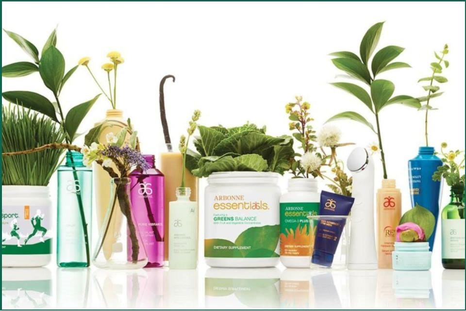

To właśnie w Radomiu powstało pierwsze w Polsce Wegańskie SPA! Dbające o piękno od wewnątrz jak i na zewnątrz.
Spełniając najwyższe standardy jakości i bezpieczeństwa pragniemy zadbać o Twoje ciało stosując holistyczne zabiegi, wpływając tym samym nie tylko na zewnętrzne piękno, ale również wprowadzając harmonię w Twój umysł i psychikę.
Nie od dziś wiadomo, że substancje zawarte w składzie kosmetyków przenikają przez barierę naskórka powodując różne, często alergiczne reakcje naszej skóry ale również mogą gromadzić się w węzłach chłonnych i przyczyniać się do powstawania wielu chorób.
Najbardziej niebezpieczne są metale ciężkie oraz parabeny i konserwanty zawarte w kosmetykach. Stosowane na przebiegu lat, często nawet dwa razy dziennie (np. antyperspirant, czy podkład do twarzy) mogą być jednym z czynników sprzyjającym
powstawaniu nowotworów.
Dlatego też w naszym SPA nie stosujemy produktów szkodliwych dla zdrowia człowieka. Oferujemy bezpieczne zabiegi na twarz, ciało oraz konsultacje żywieniowe pozwalające oczyścić swój organizm z toksyn i złogów nagromadzonych przez niezdrowy tryb życia.
Spełniając najwyższe standardy jakości i bezpieczeństwa pragniemy zadbać o Twoje ciało stosując holistyczne zabiegi, wpływając tym samym nie tylko na zewnętrzne piękno, ale również wprowadzając harmonię w Twój umysł i psychikę.

Produkty, na których pracujemy są wegańskie oraz NIE zawierają:
- Składników pochodzenia zwierzęcego ani ubocznych produktów zwierzęcych, co obejmuje między innymi nabiał, miód, wosk pszczeli oraz jedwab. Nasze produkty spożywcze mają status „dairy-free”, czyli „bez nabiału”.
- Składników, które są szkodliwe dla środowiska i mają negatywny wpływ na społeczeństwo.
- Sztucznych barwników, aromatów i słodzików. Wiele sztucznych substancji zapachowych i sztucznych barwników pochodzi z ropy naftowej, dlatego mogą zawierać składniki wywołujące zakłócenia funkcjonowania układu hormonalnego alergeny
oraz toksyny środowiskowe.
- Składników, które mogą wywoływać podrażnienie lub są trujące.
- Tłuszcze typu trans zostały dokładnie zbadane pod względem wywoływania szkodliwych skutków w zakresie poziomu cholesterolu, a dokładnie podnoszą poziom złego cholesterolu (LDL), obniżając poziom dobrego cholesterolu (HDL).
Przyczyniają się również do zwiększenia ryzyka występowania cukrzycy, chorób serca i zawału.
- Składników alergizujących. Gluten-Pszenica, żyto oraz jęczmień zawierają białko glutenu, które może powodować poważne problemy zdrowotne u osób cierpiących na nietolerancję, wrażliwość lub alergię w odniesieniu do tego składnika.
- Składników rakotwórczych (np. Środki konserwujące uwalniające formaldehyd, który może przyczynić się do występowania astmy lub toksyczności rozwojowej, dlatego w naszych formułach nie stosujemy środków konserwujących).
- Siarczan sodu (SLES) oraz laurylosiarczan sodu (SLS) to silnie drażniące środki powierzchniowo czynne, które mogą wywoływać podrażnienie skóry lub reakcje alergiczne. Co więcej, substancje SLES często mogą być zanieczyszczone
substancją zwaną 1,4-dioksan, która jest ubocznym produktem procesu wytwarzania i może przyczynić się do występowania raka.
- Etanoloaminy (MEA/DEA/TEA). Są to substancje często stosowane w kosmetykach jako emulgatory i składniki spieniające oraz regulujące poziom pH. Mogą powodować toksyczność narządów, raka oraz biokumulację.
- Substancje zaburzające gospodarkę hormonalną w organizmie. Niektóre parabeny mogą wywoływać zakłócenia funkcjonowania układu hormonalnego, co może przyczynić się do występowania określonych rodzajów raka. W naszych produktach
nie stosujemy żadnych parabenów. Ftalanów, czyli ftalan dibutylu (DBP), ftalan dimetylu (DMP) oraz ftalan dietylu (DEP), to składniki uplastyczniające - powszechnie stosowane w perfumach jako rozpuszczalniki i utrwalacze.
Ftalany mogą wywoływać zakłócenia funkcjonowania układu hormonalnego, co może powodować wady wrodzone.
{kind=link}
{kind=link}
{kind=link}
{kind=link}